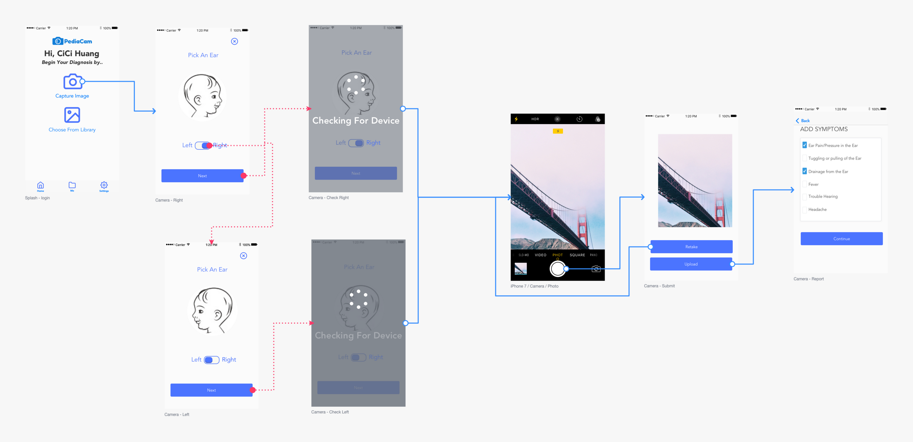
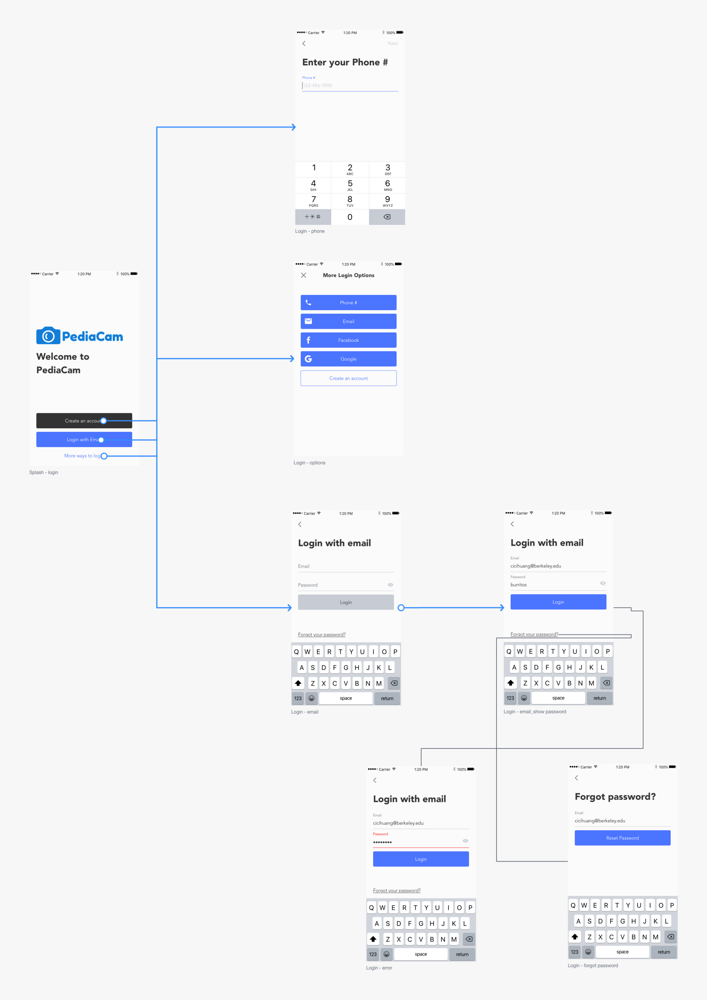

PediaCam is an app that allows users to take pictures of their ears or throats via a smartphone-connected camera and send them to licensed physicians for diagnosis. Hear are some sample UI I designed:
Sample pictures:

